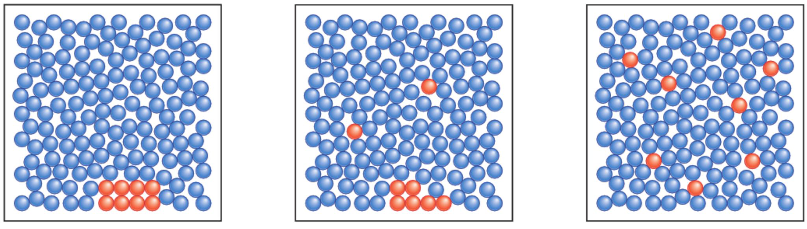
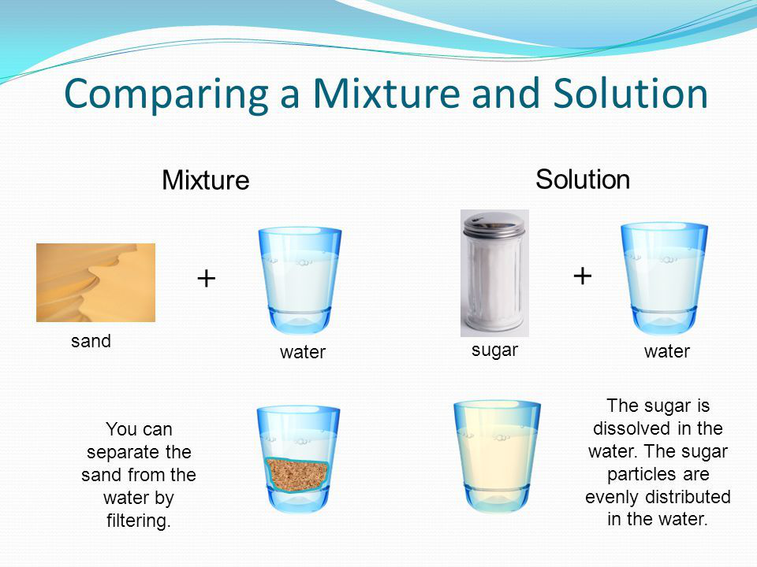
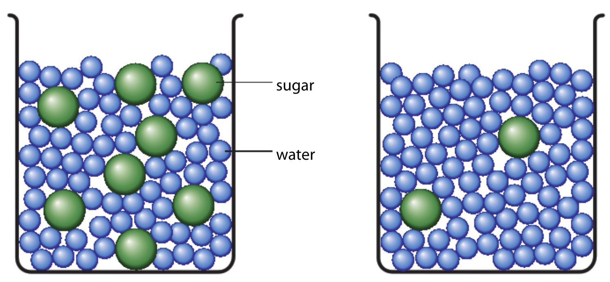
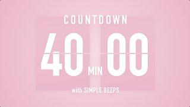
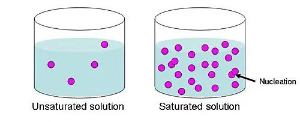
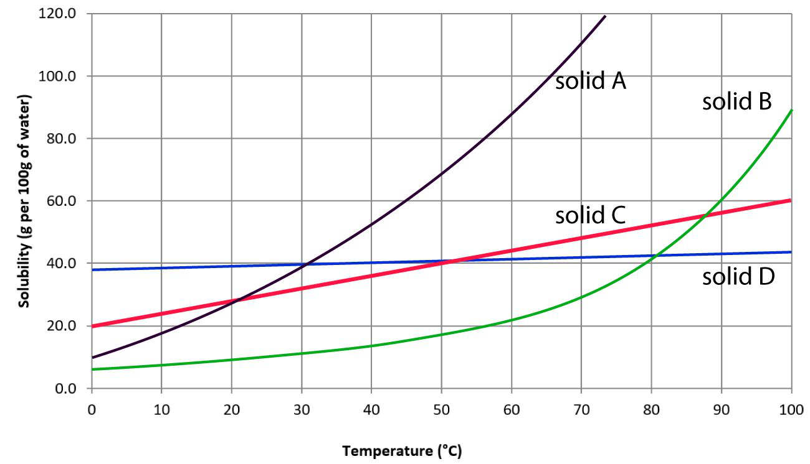
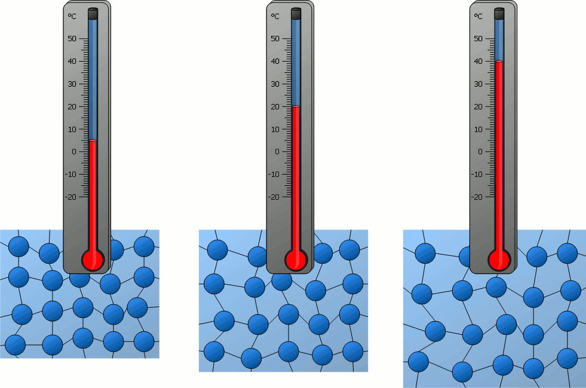
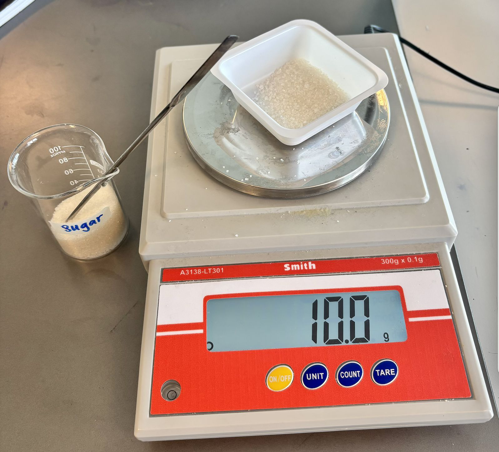
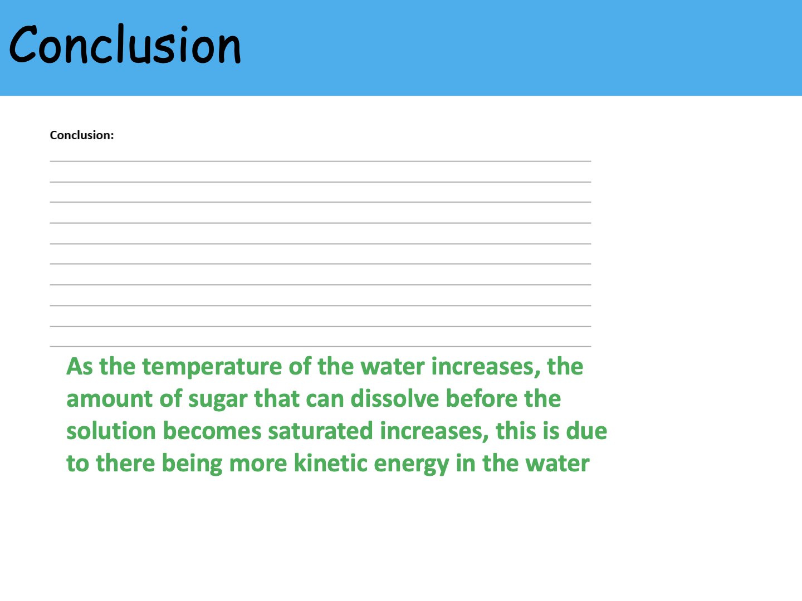

1. Dissolving and the Particle Model
2.1 DissolvingWhat is dissolving? (용해란?)
Dissolving is when a solid breaks up into tiny particles and spreads evenly through a liquid.
용해(dissolving)는 고체가 작은 입자로 나뉘어 액체 속에 골고루 퍼지는 현상입니다.
The sugar does not disappear — its particles are simply spread between the water particles.
설탕은 사라지는 게 아닙니다 — 입자가 물 분자 사이에 흩어진 것뿐입니다.
That's why you can still taste the sweetness everywhere in the cup.
그래서 컵 어디서든 단맛이 느껴집니다.

Solute, Solvent, Solution (용질·용매·용액)
The solute is the substance that is being dissolved (usually a solid).
용질(solute)은 녹는 물질입니다 (보통 고체).
The solvent is the liquid that does the dissolving.
용매(solvent)는 용질을 녹이는 액체입니다.
The solution is the mixture formed when the solute dissolves in the solvent.
용액(solution)은 용질이 용매에 녹아 만들어진 혼합물입니다.
Example: sugar (solute) + water (solvent) = sugar water (solution).
예: 설탕(용질) + 물(용매) = 설탕물(용액).

Soluble vs Insoluble (녹는 것 vs 안 녹는 것)
A substance that dissolves in a solvent is called soluble.
용매에 녹는 물질은 soluble(가용성)이라고 합니다.
A substance that does not dissolve is called insoluble.
녹지 않는 물질은 insoluble(불용성)이라고 합니다.
For example, salt is soluble in water, but sand is insoluble in water.
예: 소금은 물에 soluble, 모래는 물에 insoluble.
Mass conservation (질량 보존)
When 9 g of sugar dissolves in 146 g of water, the solution weighs 155 g (not less!).
설탕 9g이 물 146g에 녹으면 용액은 155g입니다 (줄지 않음!).
Mass is conserved — the sugar particles are still there, just spread out.
질량은 보존됩니다 — 설탕 입자가 흩어졌을 뿐 그대로 있기 때문입니다.
Mass of solute + Mass of solvent = Mass of solution.
용질 질량 + 용매 질량 = 용액 질량.

Dissolving is NOT melting (용해는 녹음과 다릅니다)
In Korean both are called '녹다', but in English they are different!
한국어로는 둘 다 '녹다'지만 영어로는 다릅니다!
Dissolving: a solute spreads through a solvent (needs TWO substances).
Dissolving(용해): 용질이 용매 속에 흩어짐 (두 물질 필요).
Melting: a solid changes to a liquid when heated (one substance, state change).
Melting(녹음/용융): 가열로 고체가 액체로 상태 변화 (한 물질).
Ice → water is melting. Sugar in water is dissolving.
얼음 → 물은 melting. 설탕이 물에 풀리는 건 dissolving.
2. Concentration of Solutions
SC 2.2 Concentration of solutionsWhat is concentration? (농도란?)
Concentration is a measure of how much solute is dissolved in a given amount of solvent.
농도(concentration)는 정해진 양의 용매에 녹아 있는 용질의 양입니다.
The more solute particles in the same volume of solvent, the higher the concentration.
같은 부피의 용매에 용질 입자가 많을수록 농도가 높습니다.

Concentrated vs Dilute (진한 vs 묽은)
A concentrated solution has a large amount of solute compared to the solvent.
진한(concentrated) 용액은 용매에 비해 용질이 많이 녹아 있는 용액입니다.
A dilute solution has a small amount of solute compared to the solvent.
묽은(dilute) 용액은 용매에 비해 용질이 적게 녹아 있는 용액입니다.
Sugar in tea: 5 spoons = concentrated; 1 spoon = dilute.
홍차에 설탕 5스푼 = 진함, 1스푼 = 묽음.
How to change the concentration (농도 바꾸는 방법)
To make a solution more concentrated: add more solute, or evaporate some of the solvent.
용액을 더 진하게 하려면: 용질을 더 넣거나 용매를 증발시킵니다.
To make a solution more dilute: add more solvent (e.g. water).
용액을 더 묽게 하려면: 용매(예: 물)를 더 넣습니다.
Showing concentration with particle diagrams (입자 모델)
To compare concentrations, draw the same volume of solution and count solute particles inside.
농도를 비교할 때는 같은 부피의 용액을 그리고 안에 있는 용질 입자를 셉니다.
More dots in the same box = more concentrated.
같은 상자 안에 점이 많을수록 = 더 진한 용액.

3. Solubility in Water
2.3 Solubility in WaterSaturated vs Unsaturated (포화 vs 불포화)
An unsaturated solution can still dissolve more solute.
불포화(unsaturated) 용액은 아직 더 용질을 녹일 수 있는 상태입니다.
A saturated solution cannot dissolve any more solute at that temperature — extra solute sinks to the bottom.
포화(saturated) 용액은 그 온도에서 더 이상 용질을 녹일 수 없는 상태입니다 — 더 넣은 용질은 바닥에 가라앉습니다.

What is solubility? (용해도의 정의)
Solubility is the maximum amount of solute that can dissolve in a given amount of solvent at a particular temperature.
용해도(solubility)는 특정 온도에서 정해진 용매에 녹을 수 있는 용질의 최대량입니다.
Usually measured as 'grams of solute per 100 g of water'.
보통 '물 100g에 녹는 용질의 g수'로 표시합니다.
Example: at 20°C, the solubility of sugar in water is about 203 g per 100 g of water.
예: 20°C에서 설탕의 용해도는 물 100g당 약 203g입니다.
Different substances have different solubilities (물질마다 용해도가 다릅니다)
Different solutes dissolve different amounts in the same amount of water.
같은 양의 물에 녹는 용질의 양은 물질마다 다릅니다.
Sugar dissolves very well, salt dissolves well, but chalk barely dissolves.
설탕은 매우 잘 녹고, 소금도 잘 녹지만, 분필가루는 거의 안 녹습니다.

Variables in a fair test (공정 실험의 변수)
Independent variable: the one you deliberately change (e.g. type of solute).
독립변수: 의도적으로 바꾸는 것 (예: 용질의 종류).
Dependent variable: the one you measure (e.g. spoons that dissolve).
종속변수: 측정하는 것 (예: 녹은 스푼 수).
Control variables: kept the same to make it a fair test (volume of water, temperature, stirring).
통제변수: 공정 실험을 위해 같게 유지 (물 부피, 온도, 젓기).
4. Solubility and Temperature
2.4 Solubility and temperatureHow temperature affects solubility (온도가 용해도에 미치는 영향)
When water gets hotter, its particles have more kinetic energy and move faster.
물이 뜨거워지면 물 입자가 운동 에너지를 더 많이 가지고 빠르게 움직입니다.
Fast-moving water particles can break up solute particles more easily, so more solute dissolves.
빠르게 움직이는 물 입자는 용질 입자를 더 쉽게 흩어 놓아 더 많은 용질이 녹습니다.
So for most solid solutes, solubility increases with temperature.
그래서 대부분의 고체 용질은 온도가 올라가면 용해도가 증가합니다.

Experiment: solubility of sugar at different temperatures (온도별 설탕 용해도 실험)
Aim: see how temperature affects the amount of sugar that dissolves in 25 cm³ of water.
실험 목적: 물 25cm³에 녹는 설탕의 양이 온도에 따라 어떻게 달라지는지 봅니다.
Variables — Independent: water temperature (room temp, 50°C, 100°C). Dependent: mass of sugar dissolved (g).
변수 — 독립: 물 온도 (실온, 50°C, 100°C). 종속: 녹은 설탕의 질량(g).
Control variables: volume of water (25 cm³), stirring, same beaker size.
통제변수: 물 부피(25cm³), 젓는 힘, 같은 비커 크기.
Method: add 10 g of sugar at a time and stir, until no more dissolves (saturated).
방법: 설탕을 10g씩 넣고 저어가며 더 이상 녹지 않을 때(포화)까지.

Safety (안전 수칙)
Hot water can burn you, so:
뜨거운 물은 화상을 입힐 수 있으니:
• Wear safety goggles.
• 안전 고글을 착용합니다.
• Tie back long hair.
• 긴 머리는 묶습니다.
• Use a test tube holder when picking up hot beakers.
• 뜨거운 비커는 집게(test tube holder)로 잡습니다.
Results and conclusion (결과와 결론)
When you plot temperature (x-axis) vs mass of sugar dissolved (y-axis), the line goes up to the right.
온도(x축) vs 녹은 설탕 양(y축)으로 그래프를 그리면, 선이 오른쪽 위로 향합니다.
Conclusion: as the temperature of water increases, the solubility of sugar increases.
결론: 물의 온도가 올라갈수록 설탕의 용해도가 증가합니다.
Note: not ALL substances behave this way — a few solids become less soluble at higher temperatures.
주의: 모든 물질이 그렇진 않습니다 — 일부 고체는 오히려 온도가 높을수록 덜 녹습니다.
